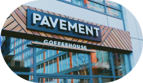

Our love of coffee, bagels, and Back Bay brownstones is perfectly combined on our front patio where you can kick back on one of Boston’s most classic and noteworthy streets. It’s charming, we promise.
286 Newbury Street Boston MA 02115

Our connection with BU dates back to the 90s when our founder was a student here. When the opportunity presented itself, we jumped at the chance to once again engage with the students, faculty, staff, and members of the community.
736 Commonwealth Ave. Boston, MA 02215

Our Berklee shop has music in its DNA. Built in what was formerly Jack’s Drum Shop, this was the first Pavement location back in 2009. The cafe was designed to be a “counterpoint” to the busy Berklee College of Music campus and to introduce craft, slow bar coffee, to the Back Bay.
1096 Boylston Street Boston, Ma 02215
The Fenway is known all over the world for Fenway Park, but it’s so much more than that. The neighborhood has blossomed to form a nice contrast to the classic Queen Anne architecture from many of the surrounding neighborhoods - becoming a hive of events, art, dining, and culture. We’re happy to be a part of it.
1334 Boylston St, Boston, MA 02215